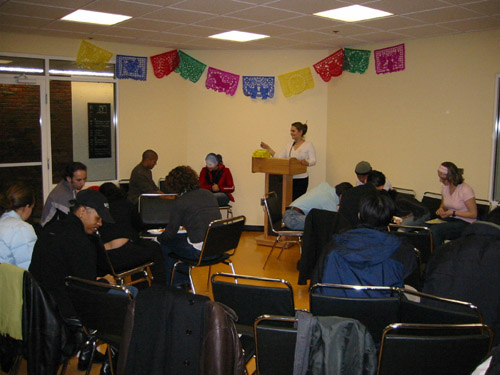

News

MIT Latino and Latina Alumni Donate to the LCC
Rogelio Garcia ('02) donated DVD movies to the Latino Cultural Center. The Latino Cultural Center has begun a movie collection of films that relate and share the Latino experience. Rogelio has helped to start this collection. He visited and took advantage of events happening at the center. He also scoped out the new lounge space as well as the mural that is being finished.
The Latino Cultural Center has also received donations from the Latino students of the class of 2002. Desiree Ramirez ('02) headed a fundraiser for the center to collect funds for computer supplies. The center has made use of these funds by upgrading the memory in their computer, buying a CD-writer and a scanner. These items are being used to help with the student organizations' web page development.
All MIT alumni are encouraged and welcomed to the Latino Cultural Center. We welcome any types of donations to the center. The center is in need of basic supplies such as sturdy tables for computers and couches for the social spaces.
Latino Cultural Center wins the Best Example of Teamwork Award (05.16.03)
Today, the Latino Cultural Center was recognized for planning an excellent inauguration event in March that brought together more than 200 people from the MIT and Greater Boston community. The award reads, Best Example of Teamwork by an Organization presented by the MIT Student Activities Office to a group that showed the ability to collaborate effectively to produce an event that was inviting and inclusive of all members of the MIT community.
Mural Project by Victor Cervantes (05.15.03)
Victor Cervantes, Harvard Graduate School of Education masters student, is helping the Latino Cultural Center design and paint a mural in the surrounding walls of the Latino Lounge. The mural project is scheduled to be finished by June 9th, 2003. Students who would like to help paint can contact the Latino Cultural Center at latinolounge@mit.edu. No experience necessary! We are also looking for people who would like to add poetry, writings or other art pieces to the mural. If you are interested in adding your piece, please contact us!
Thank you for your Support
The Latino Cultural Center would like to thank all students, staff, faculty and administrators that have provided advice and support throughout the entire first year! We are very grateful for all your service and dedication to the opening and structuring of the Latino Cultural Center.